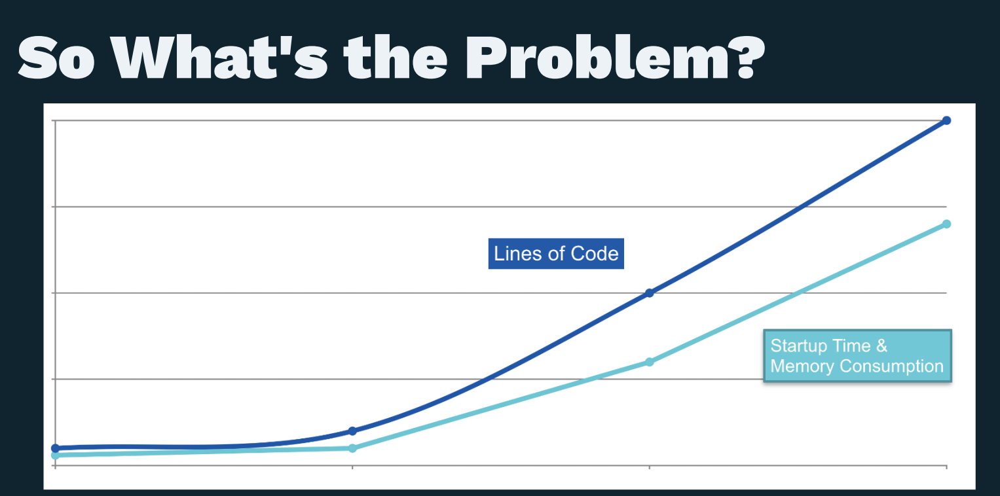
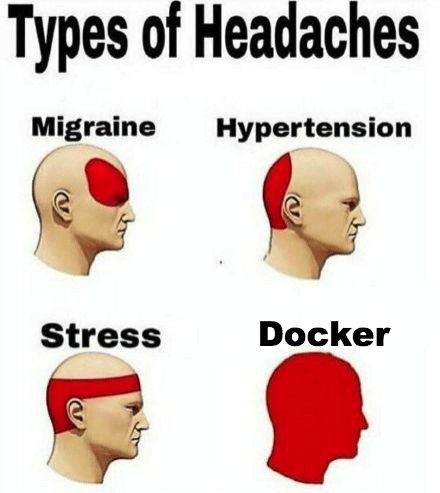
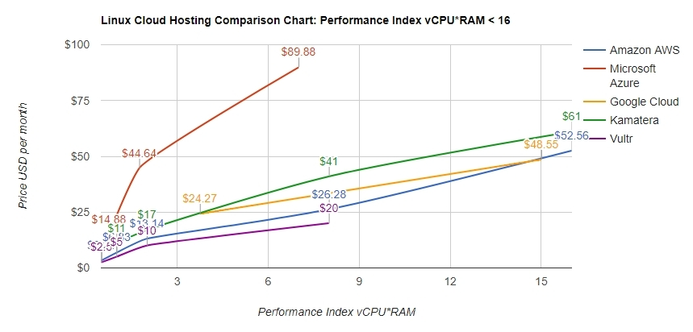
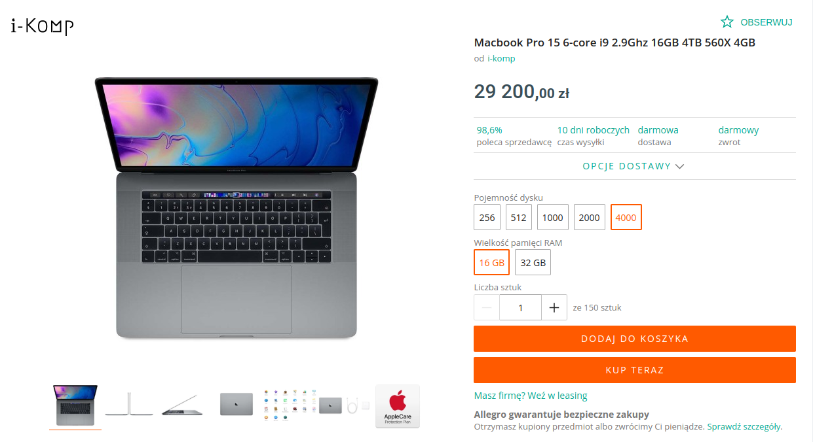
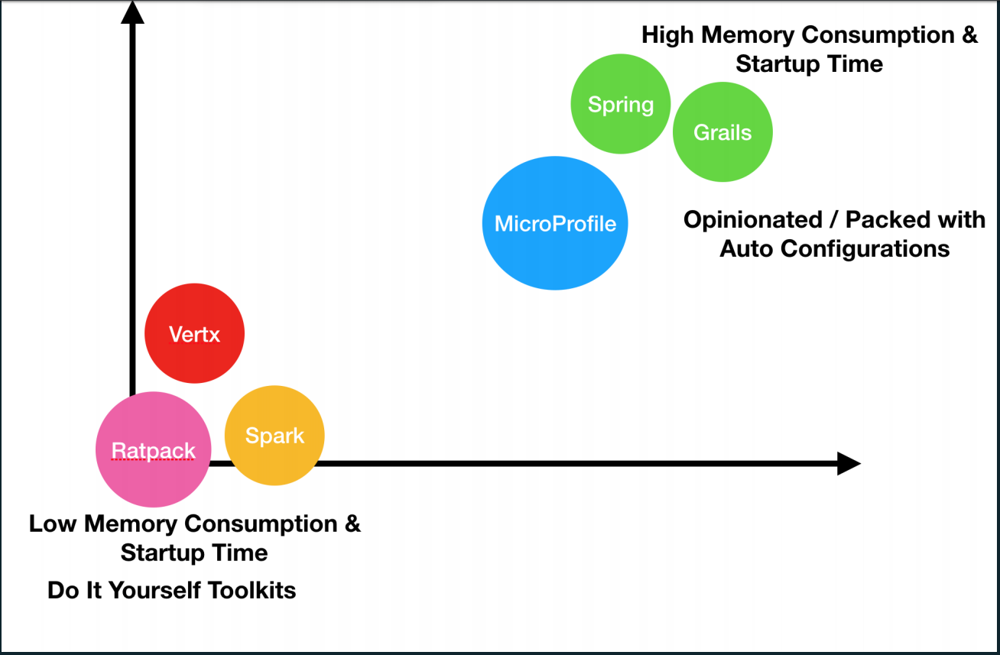
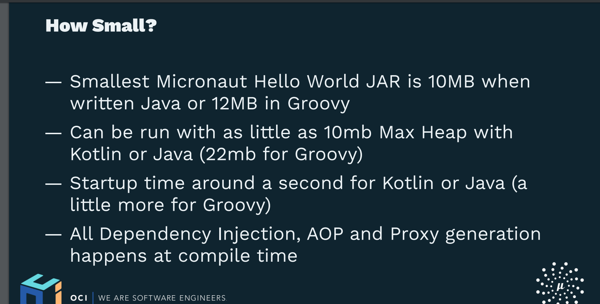
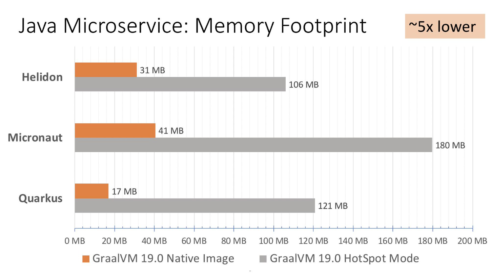
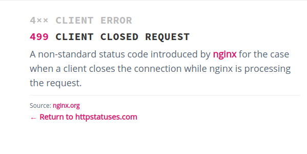
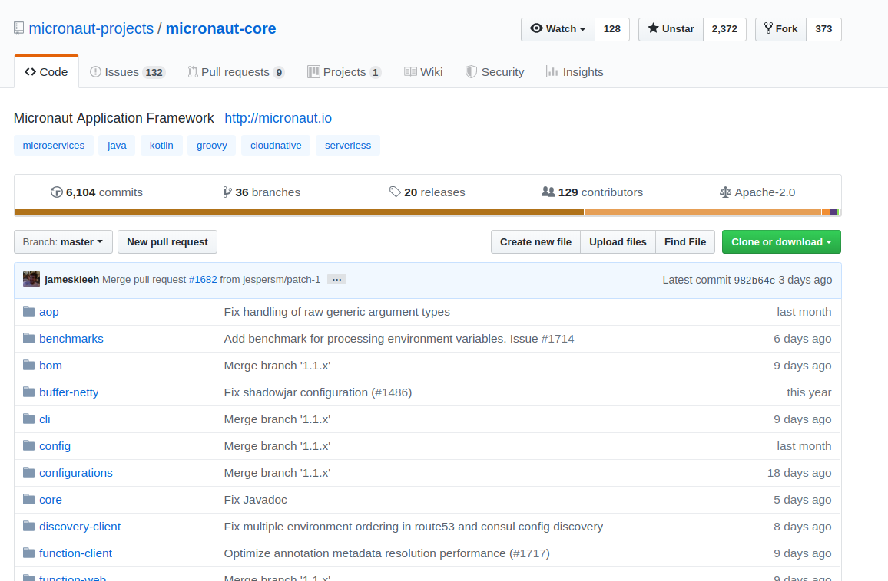

Micronaut Framework
Compilation limits
Presentation by
Ryszard Perkowski
About me
Using Spring since 2006
Agenda
Problem
Solution
API Overview
Benchmarks and other lies
QA

Oracle Code One 2018
Why?
a lot happens in runtime
Read the byte code of every bean it finds
Synthesize new annotations
Build Reflective Metadata
Other problems
Type erasure
Slow reflection
Reflective data caches
Classpath scanning
Dynamic class loading
Let me demon-strate
Spring Boot petclinic
On top of it

https://blog.tenx.tech/the-nix-fix-f4844773d281
AWS
IO
CPU
Network
Cloud cost

https://en.wikipedia.org/wiki/Amazon_Elastic_Compute_Cloud
What can you do?
buy a bigger mac

don't worry, pay more
buy Amazon shares
do less

Oracle Code One 2018
Solution - potential
Ahead of time compilation
Google Dagger 2.x
Java server world
Goal
Create a New Framework designed from the groundup for Microservices and Serverless Computing
Blazing fast startup time
Low Memory Footprint
As Small As Possible JAR Sizes
Zero Dependency
12 Factor - https://12factor.net
How
DI during compilation
Reactive - based on Netty
AOP, proxies all processed during compilation
How small

Oracle Code One 2018
API
Demo
API Functions
AWS Lambda
Other benefits
Better tooling integration (Jackson)
Auto Documentation
GraalVM
GraalVM
GraalVM Native image
20ms startup with 18MB consumption

https://medium.com/graalvm/lightweight-cloud-native-java-applications-35d56bc45673
GraalVM requirements
plan ahead
Benchmarks
Benchmark
Our results
Project size - medium - ~ 300 classes with logic
Jar size - 150MB -> 42MB
Startup - 8s - 2s
Our issues
HTTP status 499
Our issues

Competition
Quarkus
Helidon

Future looks bright
ORM
reflection-free validation-api
OAuth2
JMS
Summary
Micronaut is small and fast
has many Spring features
allows for a lot of new features
Q & A